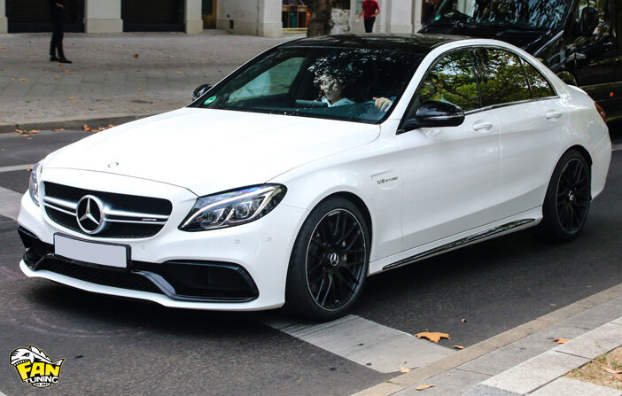
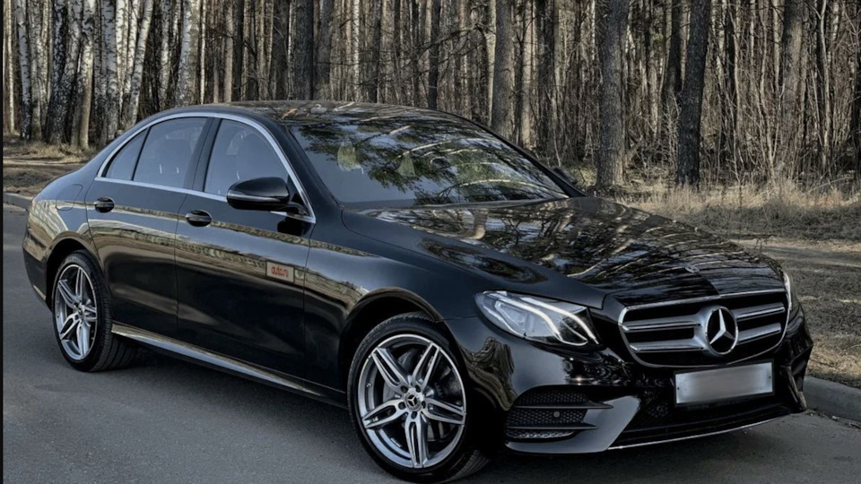
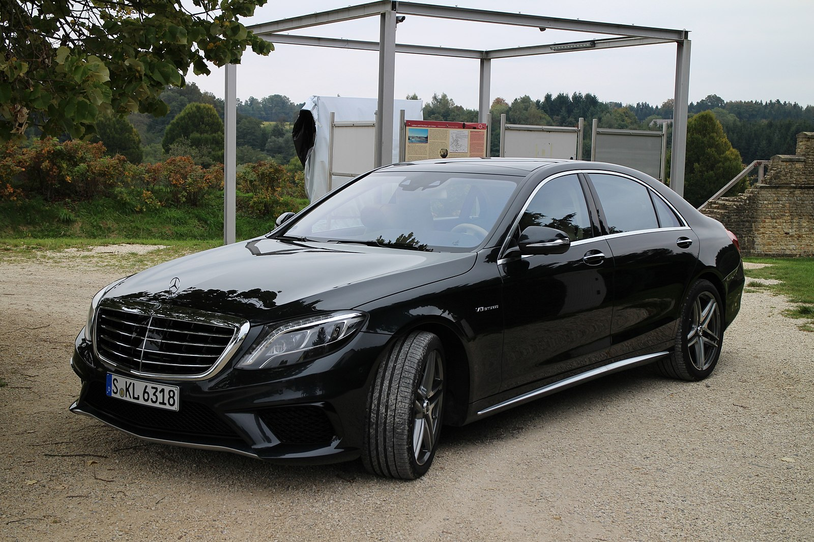

Mercedes-Benz C-Class (W205)
| Характеристика | Значение |
|---|---|
| Годы выпуска | 2014–2021 |
| Двигатель | 2.0 л Turbo (C300) |
| Мощность | 245 л.с. |
| Разгон 0–100 км/ч | 6.0 с |
| Макс. скорость | 250 км/ч |
| Начальная цена | от $42 000 |
| Привод | Задний / 4MATIC |
| Wi-Fi / Bluetooth | Bluetooth, Wi-Fi опция |
| Тормозная система | Дисковые по кругу |
| Системы предотвращения столкновений | Collision Prevention Assist |
Mercedes-Benz E-Class (W213)
| Характеристика | Значение |
|---|---|
| Годы выпуска | 2016–2023 |
| Двигатель | 2.0 л Turbo (E300) |
| Мощность | 258 л.с. |
| Разгон 0–100 км/ч | 6.2 с |
| Макс. скорость | 250 км/ч |
| Начальная цена | от $55 000 |
| Привод | Задний / 4MATIC |
| Wi-Fi / Bluetooth | Bluetooth, Wi-Fi |
| Тормозная система | Дисковые вентилируемые |
| Системы предотвращения столкновений | Active Brake Assist |
Mercedes-Benz S-Class (W222)
| Характеристика | Значение |
|---|---|
| Годы выпуска | 2013–2020 |
| Двигатель | 3.0 л V6 Biturbo (S450) |
| Мощность | 367 л.с. |
| Разгон 0–100 км/ч | 5.1 с |
| Макс. скорость | 250 км/ч (огранич.) |
| Начальная цена | от $95 000 |
| Привод | 4MATIC |
| Wi-Fi / Bluetooth | Bluetooth, Wi-Fi встроен |
| Тормозная система | Перфорированные дисковые |
| Системы предотвращения столкновений | DISTRONIC + PRE-SAFE |